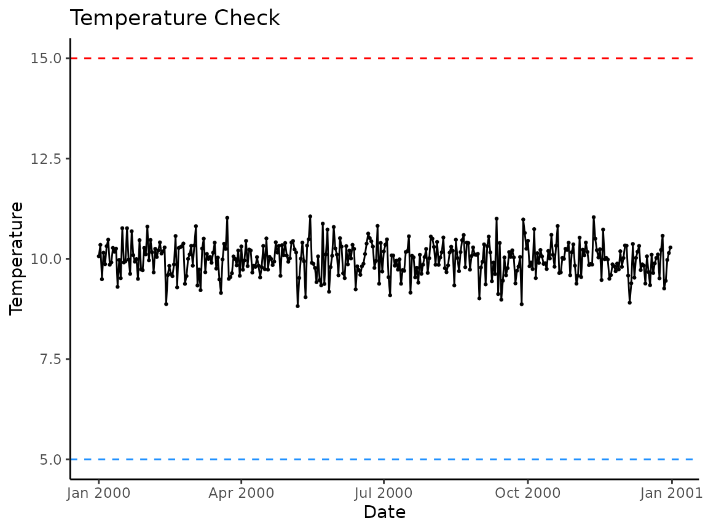
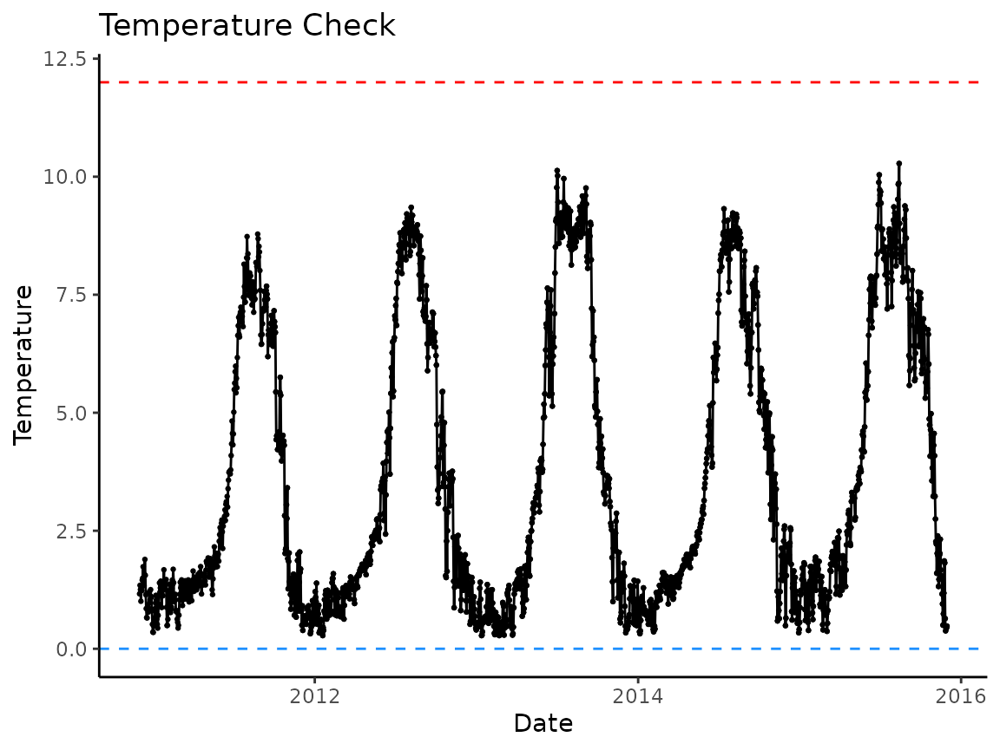

Overview
hatchR is an R package that allows users to predict hatch and emergence timing for wild fishes, as well as additional tools to aid in those analyses. hatchR is intended to bridge the analytic gap of taking statistical models developed in hatchery settings (e.g., Beacham and Murray 1990) and applying them to real world temperature data sets using the effective value framework developed by Sparks et al. (2019).
In this vignette, we:
- describes input data requirements
- provide recommendations for importing data
- review basic data checks
- preview the full hatchR workflow covered in other vignettes
Input Data Requirements
Water temperature datasets for wild fishes are often either (1) already summarized by day (i.e., mean daily temperature) or, (2) in a raw format from something like a HOBO TidbiT data logger where readings are taken multiple times per day, which can be summarized into a mean daily temperatures. Alternatively, daily water temperature predictions from novel statistical models (e.g., Siegel et al. 2023) could be similarly implemented.
Fundamentally, hatchR assumes you have input data with two columns:
- date: a vector of dates (and often times) of a temperature
measurement (must be class
DateorPOSIXct, which Tibbles print as <date> and <dttm>, respectively). - temperature: a vector of associated temperature measurement (in centigrade).
Additional columns are allowed, but these are required.
We expect your data to look something like this:
| date | temperature |
|---|---|
| 2000-01-01 | 2.51 |
| … | … |
| 2000-07-01 | 16.32 |
| … | … |
| 2000-12-31 | 3.13 |
hatchR assumes you’ve checked for missing records or errors in your data because it can work with gaps, so it’s important to go through the data checks discussed below, as well as your own validity checks.
hatchR can use values down to freezing (e.g., 0 °C), which returns extremely small effective values, and time to hatch or emerge may be > 1 year. In these cases, we suggest users consider how much of that data type is reasonable with their data. To learn more about this, see the section on negative temperatures in the Predict fish phenology: Basic vignette.
Prerequisites: Dates and Times
Numeric temperature values are simple to work with in R, but dates and time can be tricky. Here we provide a brief overview of how to work with dates and times in R, but refer the user to Chapter 17 in R for Data Science (Wickham, Çetinkaya-Rundel, and Grolemund 2023) for a more in-depth discussion.
The lubridate package makes it easier to work with dates and times in R. It comes installed with hatchR, and can be loaded with:
There are three types of date/time data that refer to an instant in time:
- A date, which Tibbles print as <date>
- A time within a day, which Tibbles print as <time>
- A date-time is a date plus time, which Tibbles
print as <dttm>. Base R calls these
POSIXct, but that’s not a helpful name.
You can use lubridate::today() or
lubridate::now() to get the current date or date-time:
In the context of hatchR, the ways you are likely to create a date/time are:
- reading a file into R with
readr::read_csv() - from a string (e.g., if data was read into R with
read.csv()) - from individual components (year, month, day, hour, minute, second)
Reading in dates from a file
When reading in a CSV file with readr::read_csv(),
readr (which also comes installed with
hatchR) will automatically parse (recognize) dates and
date-times if they are in the form “YYYY-MM-DD” or “YYYY-MM-DD
HH:MM:SS”. These are ISO8601 date (<date>) and date-time
(<dttm>) formats, respectively. ISO8601 is an international
standard for writing dates where the components of a date are organized
from biggest to smallest separated by -. Below, we first load the
readr package and then read in a CSV file with dates in the
form “YYYY-MM-DD” and “YYYY-MM-DD HH:MM:SS”:
csv <- "
date,datetime
2022-01-02,2022-01-02 05:12
"
read_csv(csv)
#> # A tibble: 1 × 2
#> date datetime
#> <date> <dttm>
#> 1 2022-01-02 2022-01-02 05:12:00If your dates are in a different format, you’ll need to use
col_types plus col_date() or
col_datetime() along with a standard date-time format (see
Table
17.1 in R for Data Science (Wickham,
Çetinkaya-Rundel, and Grolemund 2023) for a list of all date
format options).
From strings
If you you read in a CSV file using read.csv() from base
R, date columns will be formatted as a characters (<char>; e.g.,
"2000-09-01" or "2000-09-01 12:00:00"). You
will have convert to this column to a <date> or <dttm>.
lubridate helper functions attempt to automatically
determine the format once you specify the order of the component. To use
them, identify the order in which year, month, and day appear in your
dates, then arrange “y”, “m”, and “d” in the same order. That gives you
the name of the lubridate function that will parse your
date. For date-time, add an underscore and one or more of “h”, “m”, and
“s” to the name of the parsing function.
From individual components
Sometimes you have the components of a date in separate columns. You
can use make_date() or make_datetime() to
combine them into a date or date-time.
To show this, we’ll use the flights dataset that comes
with nycflights13, which is only installed alongside
hatchR when dependencies = TRUE in
install.packages(). We also make use of helper functions
from dplyr to select() and
mutate() columns.
flights |>
select(year, month, day) |>
mutate(date = make_date(year, month, day))
#> # A tibble: 336,776 × 4
#> year month day date
#> <int> <int> <int> <date>
#> 1 2013 1 1 2013-01-01
#> 2 2013 1 1 2013-01-01
#> 3 2013 1 1 2013-01-01
#> 4 2013 1 1 2013-01-01
#> 5 2013 1 1 2013-01-01
#> # ℹ 336,771 more rows
flights |>
select(year, month, day, hour, minute) |>
mutate(departure = make_datetime(year, month, day, hour, minute))
#> # A tibble: 336,776 × 6
#> year month day hour minute departure
#> <int> <int> <int> <dbl> <dbl> <dttm>
#> 1 2013 1 1 5 15 2013-01-01 05:15:00
#> 2 2013 1 1 5 29 2013-01-01 05:29:00
#> 3 2013 1 1 5 40 2013-01-01 05:40:00
#> 4 2013 1 1 5 45 2013-01-01 05:45:00
#> 5 2013 1 1 6 0 2013-01-01 06:00:00
#> # ℹ 336,771 more rowsImporting your data
Using readr::read_csv()
As noted in the prerequisites section, we recommend loading your data
into R using readr::read_csv(). We can load readr
using:
In this and other vignettes, we will use two datasets that come
installed with the package: crooked_river and
woody_island. Each dataset is available to the user as R
objects once hatchR is installed and attached (see
?crooked_river or ?woody_island for more
information). The raw example data (.csv files) are stored in the
extdata/ directory installed alongside
hatchR. We may store the file paths to example
data:
path_cr <- system.file("extdata/crooked_river.csv", package = "hatchR")
path_wi <- system.file("extdata/woody_island.csv", package = "hatchR")After specifying path_* (using
system.file()), we load the example dataset into R:
We check the crooked_river dataset by running either
str() or tibble::glimpse() to see the
structure of the data. glimpse() is a little like
str() applied to a data frame, but it tries to show you as
much data as possible. We prefer tibble::glimpse() because
it is more compact and easier to read. tibble also
comes installed with hatchR.
Now we can check the structure of the crooked_river
dataset:
glimpse(crooked_river)
#> Rows: 1,826
#> Columns: 2
#> $ date <dttm> 2010-12-01, 2010-12-02, 2010-12-03, 2010-12-04, 2010-12-05, 20…
#> $ temp_c <dbl> 1.1638020, 1.3442852, 1.2533443, 1.0068728, 1.2899153, 1.229158…
glimpse(woody_island)
#> Rows: 735
#> Columns: 2
#> $ date <chr> "8/11/1990", "8/12/1990", "8/13/1990", "8/14/1990", "8/15/1990"…
#> $ temp_c <dbl> 25.850000, 23.308333, 18.533333, 15.350000, 13.966667, 11.35833…For your own data, assuming you have a .csv file in a
data folder in your working directory called
your_data.csv, you would call:
Using read.csv()
If you import your data in with functions like
read.csv() or read.table(), date columns will
be formatted as a characters (<chr>). You will have convert to
this column to a <date> or <dttm> type, and we recommend you
do this using lubridate, which makes dealing with date
a litter easier.
Below is an example of how you might do this. First, we check the
structure of the crooked_river and
woody_island datasets:
crooked_river <- read.csv(path_cr)
woody_island <- read.csv(path_wi)
glimpse(crooked_river) # note date column imported as a character (<chr>)
#> Rows: 1,826
#> Columns: 2
#> $ date <chr> "2010-12-01T00:00:00Z", "2010-12-02T00:00:00Z", "2010-12-03T00:…
#> $ temp_c <dbl> 1.1638020, 1.3442852, 1.2533443, 1.0068728, 1.2899153, 1.229158…
glimpse(woody_island) # note date column imported as a character (<chr>)
#> Rows: 735
#> Columns: 2
#> $ date <chr> "8/11/1990", "8/12/1990", "8/13/1990", "8/14/1990", "8/15/1990"…
#> $ temp_c <dbl> 25.850000, 23.308333, 18.533333, 15.350000, 13.966667, 11.35833…Then, we convert the date columns using lubridate:
# if your date is in the form "2000-09-01 12:00:00"
crooked_river$date <- ymd_hms(crooked_river$date)
# if your date is in the form "2000-09-01"
woody_island$date <- mdy(woody_island$date)
glimpse(crooked_river)
#> Rows: 1,826
#> Columns: 2
#> $ date <dttm> 2010-12-01, 2010-12-02, 2010-12-03, 2010-12-04, 2010-12-05, 20…
#> $ temp_c <dbl> 1.1638020, 1.3442852, 1.2533443, 1.0068728, 1.2899153, 1.229158…
glimpse(woody_island)
#> Rows: 735
#> Columns: 2
#> $ date <date> 1990-08-11, 1990-08-12, 1990-08-13, 1990-08-14, 1990-08-15, 19…
#> $ temp_c <dbl> 25.850000, 23.308333, 18.533333, 15.350000, 13.966667, 11.35833…Data Checks
After data are loaded and dates are formatted correctly, we can complete a series of checks to ensure that the temperature data is in the correct format and that there are no missing values.
hatchR provides several helper functions to assist with this process.
Visualize your data
hatchR comes with the function
plot_check_temp() to visualize your imported data and
verify nothing strange happened during your import process. The function
outputs a ggplot2 object which can be subsequently
modified by the user. The arguments temp_min = and
temp_max = can be used to custom set thresholds for
expected temperature ranges (defaults are set at 0 and 25 °C). Here is
an example using the built-in dataset crooked_river:
plot_check_temp(data = crooked_river,
dates = date,
temperature = temp_c,
temp_min = 0,
temp_max = 12)
Summarize Data
If you imported raw data with multiple recordings per day,
hatchR has a built in function to summarize those data
to a daily average mean called summarize_temp(). The output
of the function is a tibble with mean daily temperature and its
corresponding.
Below, we simulate a dataset with 30 minute temperature recordings for a year and summarize the data to daily means.
# set seed for reproducibility
set.seed(123)
# create vector of date-times for a year at 30 minute intervals
dates <- seq(
from = ymd_hms("2000-01-01 00:00:00"),
to = ymd_hms("2000-12-31 23:59:59"),
by = "30 min"
)
# simualte temperature data
fake_data <- tibble(
date = dates,
temp = rnorm(n = length(dates), mean = 10, sd = 3) |> abs()
)
# check it
glimpse(fake_data)
#> Rows: 17,568
#> Columns: 2
#> $ date <dttm> 2000-01-01 00:00:00, 2000-01-01 00:30:00, 2000-01-01 01:00:00, 2…
#> $ temp <dbl> 8.318573, 9.309468, 14.676125, 10.211525, 10.387863, 15.145195, 1…Now we can summarize the data to daily means using
summarize_temp():
fake_data_sum <- summarize_temp(data = fake_data,
temperature = temp,
dates = date)
nrow(fake_data) #17568 records
#> [1] 17568
nrow(fake_data_sum) #366 records; 2000 was a leap year :)
#> [1] 366We again recommend, at a minimum, visually checking your data once it has been summarized.
# note we use fake_data_sum instead of fake_data
plot_check_temp(data = fake_data_sum,
dates = date,
temperature = daily_temp,
temp_min = 5,
temp_max = 15)
Check for continuous data
At present, hatchR only uses continuous data. Therefore, your data is expected to be continuous and complete.
You can check whether your data is complete and continuous using the
check_continuous() function. This function will return a
message if the data is or is not continuous or complete. Below, the
calls return all clear:
check_continuous(data = crooked_river, dates = date)
#> ℹ No breaks were found. All clear!
check_continuous(data = woody_island, dates = date)
#> ℹ No breaks were found. All clear!But if you had breaks in your data:
check_continuous(data = crooked_river[-5,], dates = date)
#> Warning: ! Data not continuous
#> ℹ Breaks found at rows:
#> ℹ 5You’ll get a note providing the row index where breaks are found for inspection.
If you have days of missing data, you could impute them using rolling means or other approaches.
Workflow
After importing, wrangling, and checking your temperature data, there are a number of different actions you can take. These steps are laid out in subsequent vignettes:
- Parameterize hatchR models
- Predict phenology: basic
- Predict phenology: advanced
- Predict phenology: nested
- Advanced plotting.
The generalized workflow for hatchR, including the above and subsequent steps, is shown below.